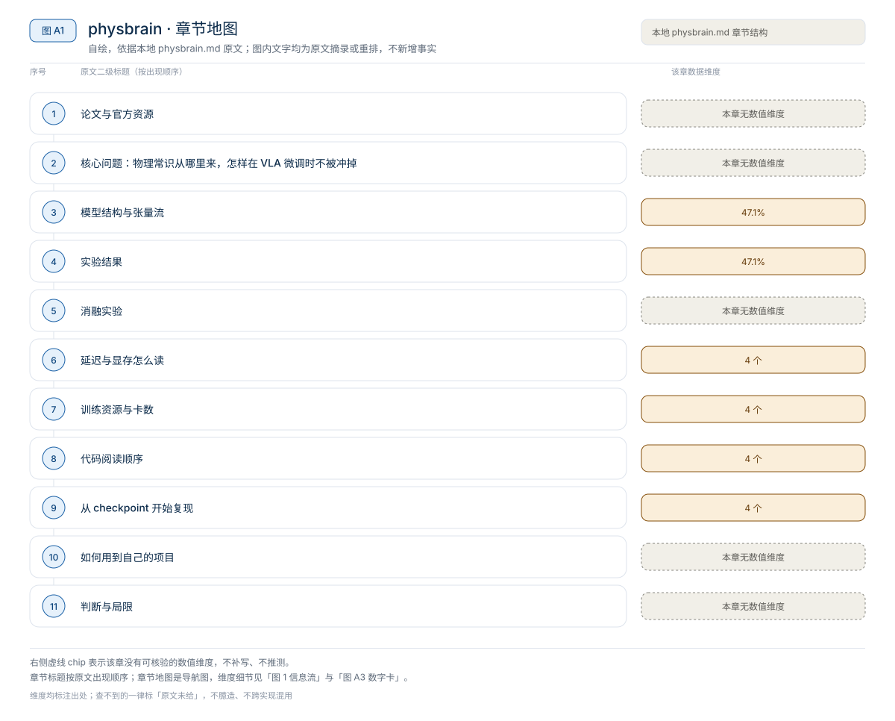
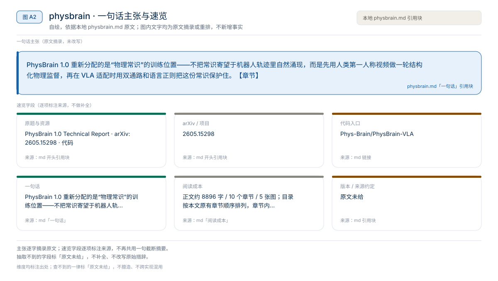
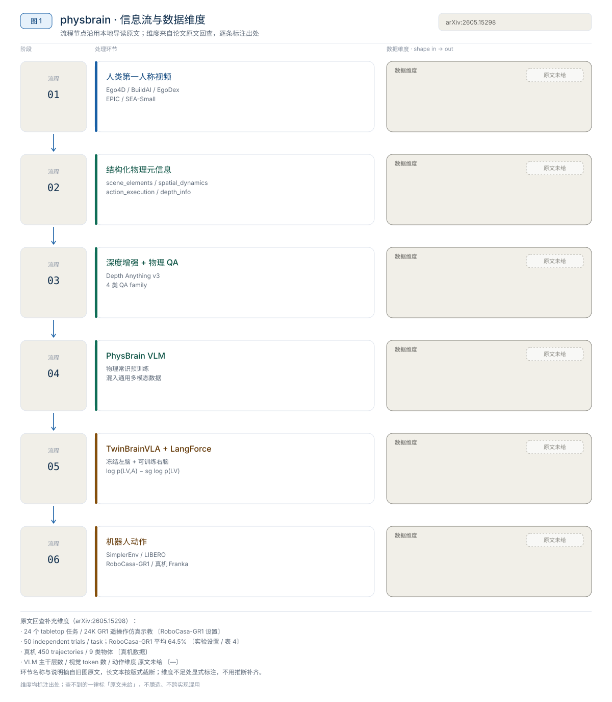
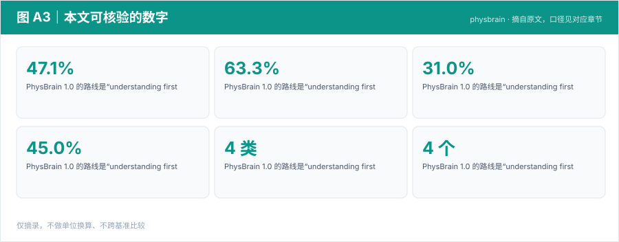

【VLA 精读 · 3D 与物理】3DVLA：把 3D 实例与遮挡补全做成 VLA 的即插即用 token
3DVLA 重新分配的是“3D 感知结果如何进入 VLA”的接口——不换 VLM，也不换动作头，而是把多视角观测整理成与 VLM token 兼容的 3D 实例 token、补全 token 和相对夹爪的空间偏置，拼回原 token 流交给 action expert。【章节】
3D 与物理
PhysBrain 1.0 重新分配的是“物理常识”的训练位置——不把常识寄望于机器人轨迹里自然涌现，而是先用人类第一人称视频做一轮结构化物理监督，再在 VLA 适配时用双通路和语言正则把这份常识保护住。【章节】
原题与资源：PhysBrain 1.0 Technical Report · arXiv:2605.15298 · 代码
一句话：PhysBrain 1.0 重新分配的是“物理常识”的训练位置——不把常识寄望于机器人轨迹里自然涌现，而是先用人类第一人称视频做一轮结构化物理监督，再在 VLA 适配时用双通路和语言正则把这份常识保护住。【章节】
阅读成本：正文约 8896 字 / 10 个章节 / 5 张图；目录按本文原有章节顺序排列，章节内容未改动。
目录（点击跳到对应章节）：

图 A1：本文章节地图（节点即原文 h2 标题）。自绘，依据本文，不新增事实。
PhysBrain 1.0 的路线是“understanding first, action next”：先把人类第一人称视频编译成结构化物理元信息与物理 QA，训练一个更懂接触、空间距离和行动可行性的 VLM；再用 TwinBrainVLA（冻结左脑 + 可训练右脑）和 LangForce（语言似然比正则）把它适配成机器人策略。章节给出的头条数字是：真实 Franka 单物体蔬菜抓取平均成功率 47.1% → 63.3%，长时域语义指令平均成功率 31.0% → 45.0%；数据引擎有 4 类结构化字段、4 类 QA family；公开 4 个 benchmark checkpoint（RoboCasa-GR1、LIBERO、SIMPLER-Bridge、SIMPLER-Fractal）。章节没有给参数量、推理显存或延迟，仿真 benchmark 也只有名称没有分数，本文不补写。
来源约定：本文事实只取自本仓库 PhysBrain 导读。章节没有逐条标注论文页码，实验数字统一记为“章节转述的论文报告”。
版本：arXiv 2605.15298，2026-05-14 提交；代码 commit：章节未给；查阅日期：2026-11-01。
| 资源 | 网页来源 | 说明 |
|---|---|---|
| 论文 | arXiv:2605.15298 / HF Papers | 技术报告；数据引擎、双脑结构与实验 |
| 源码 | Phys-Brain/PhysBrain-VLA | VLA 侧模型代码；Apache-2.0；基于 starVLA scaffold |
| 权重 | PhysBrain 1.0 VLA collection | 含 RoboCasa-GR1、LIBERO、SIMPLER-Bridge、SIMPLER-Fractal 四个 checkpoint |
| 项目页 | phys-brain.github.io | 系统总览、TwinBrainVLA、LangForce 与数据语料图 |
| 数据集 | 章节未给 | 训练语料为 Ego4D / BuildAI / EgoDex / EPIC / SEA-Small 的人类第一人称片段，章节只给名称，没有链接与规模 |
论文题目：PhysBrain 1.0 Technical Report；arXiv：2605.15298；版本：2026-05-14 提交；代码 commit：章节未给；查阅日期：2026-11-01。
开源边界：当前仓库公开的是 VLA 侧模型代码与 checkpoint 入口，README 要求把 physbrain_vla/PhysBrainVLA.py 拷到 starVLA/model/framework/ 下，再走 starVLA 的 checkpoint workflow。数据引擎、全部标注数据、完整训练脚本与大规模算力配置不应默认视为已完整开放。

图 A2：一句话主张与速览字段。自绘，依据本文，不新增事实。
一句话：PhysBrain 1.0 重新分配的是“物理常识”的训练位置——不把常识寄望于机器人轨迹里自然涌现，而是先用人类第一人称视频做一轮结构化物理监督，再在 VLA 适配时用双通路和语言正则把这份常识保护住。【章节】

图 1：PhysBrain 1.0 的“人类视频 → 物理 QA → 双脑 VLA”信息流。自绘，依据本地导读；不是论文原图。
章节把机器人数据的问题说得很直接：轨迹很贵、覆盖面窄，能覆盖抓取、放置、开抽屉，却很难覆盖透明袋子、柔性物体、容器是否装满、接触顺序、遮挡与深度关系、失败时的物理原因。人类第一人称视频恰好包含这些交互经验，但没有机器人 action，也没有统一结构化标签。PhysBrain 的转换就是给视频补上“机器可检查的物理记录”。
对比主流路径：机器人轨迹行为克隆 → 人类视频物理常识预训练 + 机器人数据适配。

图 A3：本文可核验的数字摘录。自绘，依据本文，不新增事实。
一个具体任务走一遍 · 本文可核验数字与字段速查（以下均摘自原文，未作推算）：
章节把数据引擎拆成三层。第一层是结构化场景元信息：每个视频 clip 被解析成 JSON 风格的 source record。第二层是深度增强：用 Depth Anything v3 系列模型为有 grounding metadata 的对象补 point-wise depth 与距离。第三层是物理 QA 生成：结构化 record 不是最终训练目标，最终目标仍是自然语言问答，但问题覆盖由 record 控制。
| 字段 | 记录什么 | 为什么对机器人有用 |
|---|---|---|
scene_elements | 主操作物、邻近物体、环境、材料、几何与物理状态 | 物体不只是类别，还包括刚性、透明、柔性、是否装满等操作属性 |
spatial_dynamics | 初始布局、手与物体距离变化、物体相对位置变化 | 学习“接近、接触、移动、分离”的空间过程 |
action_execution | 简短任务意图与细化执行过程 | 把观察到的动作拆成可执行步骤，而不是视频摘要 |
depth_info | 物体中心点、相对深度、绝对距离 | 给 QA 提供 3D 与 metric grounding |
章节强调这个“结构化中间层”的作用：如果直接让大模型看视频生成 QA，容易得到风格统一但物理依据不稳定的问答；先输出结构化元信息、再基于元信息生成 QA，相当于把视频监督拆成可检查、可组合、可扩展的中间表示。
纯语言描述容易停留在“左边、右边、靠近、远离”，但机器人动作需要连续位移、末端位姿与空间尺度。章节用 Depth Anything v3 系列模型补 point-wise depth 和距离后，QA 可以问“哪个物体更近”“两者距离大约多少”“这个位置是否可达”，把 VLM 的空间理解从语义关系推向物理尺度。章节没有给深度模型的版本、分辨率、标注覆盖率或误差指标。
| 类别 | 代表问题 | 训练作用 |
|---|---|---|
| 空间与度量 | 空间关系、距离与深度、尺寸估计、坐标 grounding、视角推理 | 3D 空间理解与 metric grounding |
| 动作与计划 | 下一步预测、路线规划、可操作性与安全、长时域规划 | embodied decision making |
| 动态与因果 | 物体状态变化、动作识别、时间顺序、动作定位、反事实推理 | 接触、变化与动作后果 |
| 通用能力保持 | 计数、细粒度属性、存在性检查、OCR、图表分析、科学知识、视觉逻辑 | 防止模型只会“机器人题”，保留通用 VLM 能力 |
这解释了为什么章节不把它叫“视频标注数据集”，而叫物理监督编译器：视频先拆成机器可检查的物理记录，再渲染成多样化 QA。章节没有给 QA 条数、各类比例、标注模型池的组成或人工校验比例。
VLM 迁移到 VLA 的常见问题是机器人数据规模小、分布窄：全量微调容易遗忘通用能力，冻结太多又适配不足。TwinBrainVLA 用双通路把“保留常识”和“学习控制”拆开，LangForce 再从损失侧约束语言敏感性。
| 部分 | 输入 / 作用 | 直观理解 |
|---|---|---|
| Frozen left brain | 视觉 V + 语言 L；保留 PhysBrain/VLM 的通用表示 | 不让小规模机器人轨迹把通用能力冲坏 |
| Trainable right brain（LangForce prior 模式） | V + A + L；在动作条件下仍解释语言 | 让动作分支保持语言条件关系 |
| Trainable right brain（LangForce posterior 模式） | V + L + A；贴近执行时的动作预测路径 | 学 embodiment 相关的动作生成 |
| MoT / feature fusion | 让左右脑交互 | 右脑借用左脑物理常识，但不能完全依赖视觉捷径 |
| Flow-matching action head | 从融合表示生成连续动作 chunk | 处理连续、高维、时间相关的动作输出 |
LangForce 的核心是一个语言似然比约束：动作条件下的语言解释能力，不能比只看视觉语言的基准路径退化太多。章节把它写成：
$$
\mathcal{L}_{\text{LangForce}} = \log p(L \mid V, A_{\text{prior}}) - \operatorname{sg}\left(\log p(L \mid V)\right)
$$
其中 sg 表示 stop-gradient。直观含义是：右脑在学习动作时不能简单从左脑拿视觉特征就忽略语言，而要在动作与语言之间保持统计关联。章节只给这一条损失形式的描述，没有给权重系数、训练步数或与动作损失的配比。
来源：本地导读 §4–§7。
章节给出的实验分两条线：VLM 侧的物理与通用理解，VLA 侧的仿真与真机控制。下表只记录“测了什么、想证明什么”，不代表分数。
| 评测类别 | Benchmark | 主要证明 |
|---|---|---|
| VLM QA | ERQA、PhysBench、MME、MMMU、OCRBench、RealWorldQA、TextVQA | 空间、深度、视觉语言、物理推理与通用能力是否提升 |
| 仿真控制 | SimplerEnv-WidowX、SimplerEnv-GoogleRobot | 物理常识先验能否迁移到桌面操作与 OOD 场景 |
| 长时域 / 多任务 | LIBERO | 机器人 manipulation benchmark 上的任务成功率 |
| 人形 / 通用环境 | RoboCasa-GR1 | 更复杂家务操作与 GR1 相关环境 |
| 真机 | Franka 单物体抓取、长时域语义指令 | 真实机器人上是否也有提升 |
章节没有给任何 VLM QA 分数、LIBERO 分数、SimplerEnv 分数或 RoboCasa 分数，只给 benchmark 名称与“有提升”的方向性描述。因此本文不能搭“模型 / 参数量 / 显存 / 延迟 / 成功率”对照表；强行补列会变成编造。
协议细节（任务数、每任务 trials、种子、OOD 划分、成功判定）章节均未给。能确认的只有：评测覆盖 SimplerEnv 的两个机器人设定、LIBERO 与 RoboCasa-GR1，且章节把 out-of-domain 场景作为叙事重点——VLM 若已掌握更强的人类交互物理先验，有限机器人数据适配后对新环境、新物体、新任务应更稳。
| 任务 | 基线平均成功率 | PhysBrain 1.0 | 提升 |
|---|---|---|---|
| 单物体蔬菜抓取 | 47.1% | 63.3% | +16.2 |
| 长时域语义指令 | 31.0% | 45.0% | +14.0 |
读法：这是章节给出的唯一一组真机数字，说明方法不只停留在离线 QA 或仿真；但章节没有给硬件型号细节、相机配置、演示数、微调步数、每任务测试次数与成功判定，无法判断统计显著性。基线是什么模型、是否同数据同预算，章节也未说明，因此不能把 +16.2 当作“PhysBrain 相对任意 VLA 的普遍增益”。
来源：本地导读 §9。
章节没有消融表，也没有给任何“去掉深度增强 / 去掉某类 QA / 去掉 LangForce / 冻结 vs 全量微调”的对照数字。只能从方法结构里读出四个可检验的设计杠杆，以下均为本文建议，不是章节结论：
scene_elements / spatial_dynamics / action_execution 三段式与单句 caption 的 VLM QA 与下游控制差异；测物理关系题、空间距离题与 OOD 任务。depth_info 后，距离、可达性与尺寸类问题应首先退化；测 metric grounding 子集与真机接近/抓取精度。章节没有给这些对照的任何一个数字，因此不能声称哪一项贡献最大。读者若复用，应先把评测协议固定，再逐项开关。
来源：本地导读 §4–§7 的结构描述；对照设计为本文建议。
章节没有给参数量、推理显存、单步延迟、完整请求延迟或重规划间隔，也没有给模型规模。唯一与资源相关的公开信息是代码仓库许可证（Apache-2.0）与 4 个按 benchmark 划分的 checkpoint。
| 项目 | 章节给出的信息 | 能否用于部署选型 |
|---|---|---|
| 参数量 | 章节未给 | 不能 |
| 推理显存 | 章节未给 | 不能 |
| 单步 / 请求延迟 | 章节未给 | 不能 |
| 重规划间隔 / 控制频率 | 章节未给 | 不能 |
| 测量协议（热身/重复/中位数） | 章节未给 | 不能 |
| 公开 checkpoint | 4 个：RoboCasa-GR1、LIBERO、SIMPLER-Bridge、SIMPLER-Fractal | 可以判断“有哪些目标域入口” |
| 代码许可 | Apache-2.0（仓库） | 权重许可章节未给，需自行核对 |
读法：不能从“4B 级 VLM”这类常识外推，因为章节连基座型号与参数量都没给。1000 / 延迟 只能算策略调用频率上限，不等于动作执行频率；章节没有重规划间隔，连这个上限都算不出来。部署前必须本机测裸模型前向、含图像/语言预处理与通信的请求延迟、以及动作 chunk 的执行时长。
来源：本地导读 §1、§10。
章节没有给 GPU 数、优化器步数、有效 batch、每卡 microbatch、梯度累积、学习率、warmup、EMA 或数据配比，因此无法填出标准训练配方，也无法用 B_eff = N_GPU × B_micro × N_accum 反推有效 batch。能确认的训练侧信息只有数据来源、监督形式与冻结策略。
| 训练项目 | 章节给出的内容 | 说明 |
|---|---|---|
| 数据来源 | 人类第一人称片段（Ego4D / BuildAI / EgoDex / EPIC / SEA-Small）+ 通用多模态数据 | 章节只给名称，未给规模与采样比例 |
| 预训练目标 | 结构化物理 QA + 通用多模态数据混训 | 具体损失、配比未给 |
| 数据过滤 | 视觉质量与相机运动质量过滤 | 章节在流程图中给出，未给阈值 |
| VLM 侧 | PhysBrain base model | 参数量、初始化权重未给 |
| VLA 侧 | TwinBrainVLA + LangForce，基于 starVLA scaffold | 只公开 VLA 侧代码与 checkpoint |
| 冻结策略 | 左脑冻结，右脑可训练 | 具体层范围未给 |
| 硬件 / 步数 / batch / 学习率 | 章节未给 | 无法复现训练 |
三级复现的可行性：
来源：本地导读 §1、§4–§7、§10。
章节只显式给出一个文件路径与一个 scaffold 目录，其余按模块给出阅读顺序。
physbrain_vla/PhysBrainVLA.py —— 总入口。先看 left brain / right brain 的输入划分，再看 prior / posterior 两种拼接顺序。log p(L | V, A_prior) - sg(log p(L | V)) 如何由两个前向得到，stop-gradient 加在哪一侧。starVLA/model/framework/ —— 拷贝目标；checkpoint 解析、config 与 benchmark runner 以 starVLA 官方为准。坑（章节明确提示）：
starVLA 不在本仓库内，需要单独准备；拷贝路径写错时 import 会直接失败。以下命令来自章节转述的官方 README，未在本机验证；<starVLA-repo-url> 为占位符，章节没有给具体地址。
git clone https://github.com/Phys-Brain/PhysBrain-VLA.git
git clone <starVLA-repo-url> starVLA
cp PhysBrain-VLA/physbrain_vla/PhysBrainVLA.py \
starVLA/starVLA/model/framework/# 示意命令，不是章节给出的官方命令；权重入口见 §1 的 collection
huggingface-cli download Phys-Brain/PhysBrainVLA-LIBERO \
--local-dir checkpoints/PhysBrainVLA-LIBEROimport PhysBrainVLA：Python 环境、依赖与文件位置正确。一个 smoke test 只证明模型能加载、前向能通、动作输出形状正确；它不证明论文成功率，也不证明真机可直接部署。
先选与目标 benchmark 同名的 checkpoint（LIBERO / SIMPLER-Bridge / SIMPLER-Fractal / RoboCasa-GR1），再考虑跨域迁移；章节没有给跨 checkpoint 的迁移结果。真机 Franka 结果对应的是作者自建任务，章节未给可下载权重，不能按 4 个公开 checkpoint 直接复现。
来源：本地导读 §10。
PhysBrain 1.0 最可复用的是“结构化物理监督 + 能力保持适配”这两层，而不是某个单独模块或它的 benchmark 数字。
相关章节：3DVLA、PRTS、OpenVLA、PhysBrain 导读、02 论文与评测。
本文判断：PhysBrain 1.0 最可复用的是“结构化物理监督 + 能力保持适配”这两层，而不是某个单独模块或它的 benchmark 数字。
局限与不确定项（以下均摘自本文，未作推断）：
图 A4：局限与不确定项摘录。自绘，依据本文，不新增事实。
覆盖范围：本页新增的导读、目录、章节地图、数字卡与局限清单，均为原文信息的重排或摘录；正文、数据与实验结论未改动。